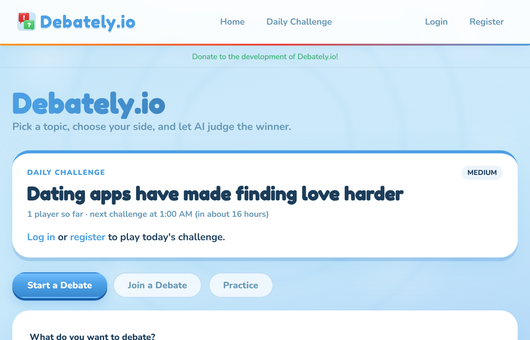
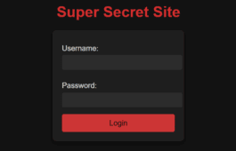
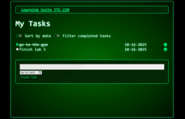
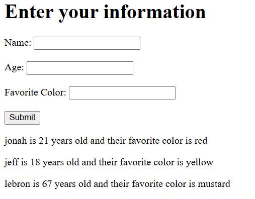
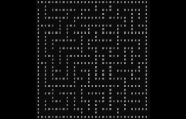

~/projects
Things I've built
Security challenges, deployments, and web apps, from capture-the-flag exploits to a live AI debate platform.
live

// featured · web · ai
visit debately.io→
Debately.io: Real-Time Debates Judged by AI
A web platform where two people go head-to-head in a live debate, and an AI judge scores the arguments and calls the winner.
// security
view slides→
Interactive Phishing Awareness Demo
Walks users through a simulated phishing attack, then breaks down the red flags they missed.

// security · python
view on github→
Python Flask CTF Security Challenge
A deliberately vulnerable Flask app built as a capture-the-flag. Find the SQL injection and grab the flag.

// security · web
view on github→
Secure Web App Deployment (DNS & TLS)
A task list app deployed to a public server with a custom domain, DNS records, and TLS for HTTPS.

// security · web
read tutorial→
Security Tutorial: JSON in localStorage
How to store JSON in the browser's localStorage, and what you should never keep there.

// python
view on github→
Recursive Maze Generation
Generates random, always-solvable mazes using recursive backtracking.